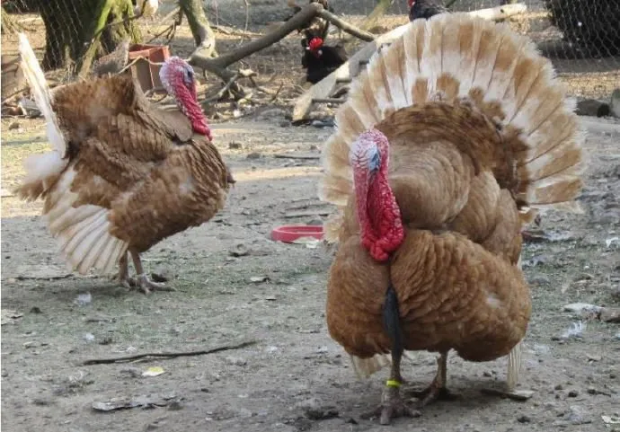

Червоні індики
Червоні з Ардени - французько-бельгійський ландрас, пристосована до суворого клімату свого первісного ареалу, з'явились в ардені у 16 столітті та були популярними протягом тривалого часу, наприклад, це була одна з найвідоміших страв, що подавалася при Чарлзі IX, коли той святкував своє весілля до Австрії Елізабет. Тим не менш, порода з часом стала менш популярною і майже вимерла. У 1985 році Жан-Мішель Девресс вирішив відродити різноманітність і співпрацювати з місцевими підприємствами, щоб розмножуватися та просувати їх. У 1985 році в Ардені було засновано п'ятдесят ферм індичок цієї породи, але до 1998 року в Ардені було більше 8000 особин. Як випливає з назви, розпізнається лише один колір: червоний. Птахи повинні мати колір якомога більше червонувато-коричневого, дозволений чорний ледь помітний натяк. Пташенята Червоних Арден народжуються від темного до світло-червоного кольору. Це легка порода індиків, в середньому 8 кг для дорослого самця і 4 кг для дорослої самки. Крім того, характеристики Червоних Арденн, здається, добре відповідають характеристикам індички Ронкіер, хоча зростання пташенят дещо менше, але генетично вони зовсім інші тварини. Сьогодні ми регулярно знаходимо Червоні Арденни на виставках та в районі походження. У деяких місцях Ардени навіть напівпромислово розводяться для альтернативного ринку, при цьому особлива увага приділяється якості м'яса.
Бронзові київські

Індики породи Buff, також відомі як Buff Orpington, є популярною породою індиків з привабливим забарвленням та характеристиками. Ось деяка інформація про цю породу: Історія: Buff Orpington були виведені в Англії на початку XX століття. Вони були виведені Чізергатом Вільямом Куком, який бажав створити породу з хорошими виробничими характеристиками та приємним забарвленням пір'я. Зовнішній вигляд: Buff індики мають великий розмір і округлу форму тіла. Їх забарвлення пір'я - світло-бежеве або пісочного відтінку, що надає їм теплий та привабливий вигляд. У них також є довгий шишкоподібний дзьоб жовтого кольору та червоні гачки на голові. Характеристики: Buff індики відрізняються своєю спокійною та дружелюбною натурою. Вони є досить великими птахами, дорослі самці можуть досягати ваги від 8 до 10 кг, а самки - від 5 до 6 кг. Вони є відмінними легкими м'ясними породами та також добре нестимуться. Використання: Buff індики використовуються як м'ясна порода, оскільки вони мають великі розміри та смачне м'ясо. Вони також добре нестимуться і можуть забезпечити господарство яйцями. Стійкість до хвороб: Buff індики відомі своєю загальною стійкістю до багатьох хвороб, що робить їх відмінним вибором для господарів.
Кольвські палични індики або Королвські пальми

Королівські палички Індики - це порода Туреччини, найвідоміша як іконописна птиця з унікальним виглядом, в основному біла з смужками металічного чорного кольору. Королівські індички вперше з'явилися в 1920-х роках на фермі inrnLake Worth, штат Флорида, мабуть, як хрест між чорними, бронзовими, наррагансеттськими і індичами. Після кількох років виборчого розведення Королівський палм був остаточно прийнятий Американською птахівницькою асоціацією "Стандарт Perfectionrnin" 1971 року. Томів відзначають неагресивність, а хворих особливо хороших матерів, але вони занадто малі для комерційного використання. Theyrnare в основному зберігається як виставка птахів, або на невеликих фермах. Королівські індички-пташки - це дуже під загрозою зникнення породи. Вони знаходяться на переліку з американською охороною поголів'я худоби. Вони також включаються в "Ковчег смаків" Slow Food в США, каталог спадщини харчових продуктів, що знаходяться в небезпеці вимирання. І Австралія та США обидва повідомляють цю породу як "загрозу".
Дикі індики

Індик великий[2], індик дикий[3] (Meleagris gallopavo) — вид птахів із підродини індикових. Є родоначальником найпоширеніших порід свійського індика. Дикі індики мають великі розміри, важать до 8 кг (самець). Довжина самця 100—110 см, самиці 85 см. Ноги довгі, міцні. Верхня сторона індика буро-жовта і буро-руда, з металічним блиском, пір'я з чорними облямівками, нижня частина спини та покривне пір'я хвоста бурі із зеленими і чорними смужками. Нижня сторона від жовтувато-бурого до буро-сірого кольору. Махове пір'я чорно-буре зі світлішими смужками. Хвіст бурий з чорними хвилястими смужками. Дещо біднішим виглядає забарвлення самиці. Дикі індики трапляються навіть у міській межі (Омаха, Небраска, США) Голова і верхня половина шиї блакитні, неоперені. Голова і шия покриті м'ясистими наростами: так звані «бородавки» червоного кольору: на лобі в основі дзьоба звішується м'ясистий придаток, на горлі висить складка шкіри. Ноги червоні або фіолетові. На грудях пучок щетинистого пір'я, схожого на кінський волос. Живиться рослинною і тваринною їжею — горіхами, жолудями, зернами й різними плодами, а також комахами. Гніздяться на землі. У квітні самиця кладе від 10 до 15 і навіть 20 яєць і самовіддано їх охороняє. Великі індики нерідко паруються зі свійськими самицями, пташенята виходять при цьому кращої якості, ніж від свійських індиків. Поширені на південному сході США та в Мексиці. Водяться у лісах Північної Америки.
Білі голанські

Біла Голландія Індички - це старий сорт вітчизняної турки. Біла Голландія виникла з хрестів білого європейського турецького дерева, що вивозиться в Північну Америку і перетинається з місцевими птахами. Біла Голландія вперше була визнана Американською асоціацією птахів у 1874 році, і сьогодні вона вважається спадщиною індички. В даний час вони перераховані в якості загрози ThernLivestock Conservancy.